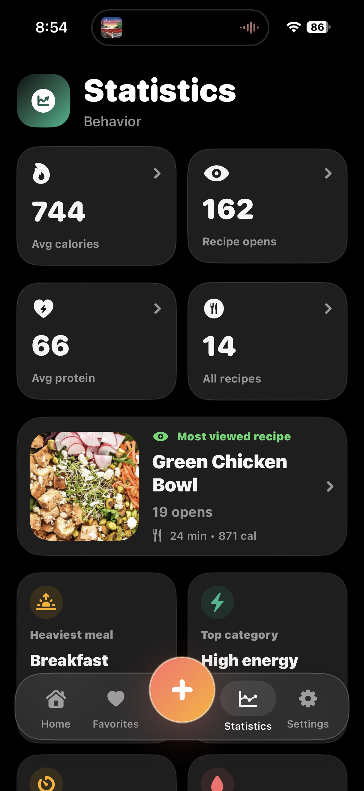

Your personal taste map.
Build a private food library, revisit favorite recipes, and understand what you cook most often.

Create recipes
Add ingredients, steps, prep time, servings, and a beautiful main recipe photo.

Cook from clear views
Open readable recipe pages with photos, ingredients, steps, calories, and protein.

Keep favorites close
Heart your go-to meals and return to the recipes you cook again and again.

Understand habits
See your most viewed, easiest, highest-protein, and highest-calorie recipes.